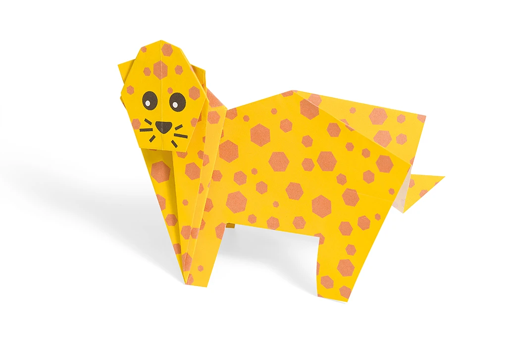
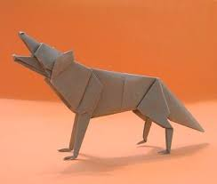

Origami Designs
About Us
Follow Us
- Butterfly
- A beautiful insect with colourful and patterned wings

Interesting facts about butterflies
- butterflies have taste receptors on their feet
- butterflies get essential nutrients by drinking from mud puddles
- butterflies see a range of ultraviolet colours invisible to the human eyes
- Cheetah
- The only big cat that cant roar

Interesting facts about cheetah
- cheetahs are the fastest animals on land
- cheetah can only purr not roar like a lion
- cheetahs are daylight hunters
- Wolves
- Largest members of the dog family which travel in packs

Interesting facts about wolves
- wolves are legendary because of their
spine tingling howl which they use for communication
- wolves can go for more than a week without eating
- wolves travel in packs
- The male and female leaders are called the breeding pairs or alphas